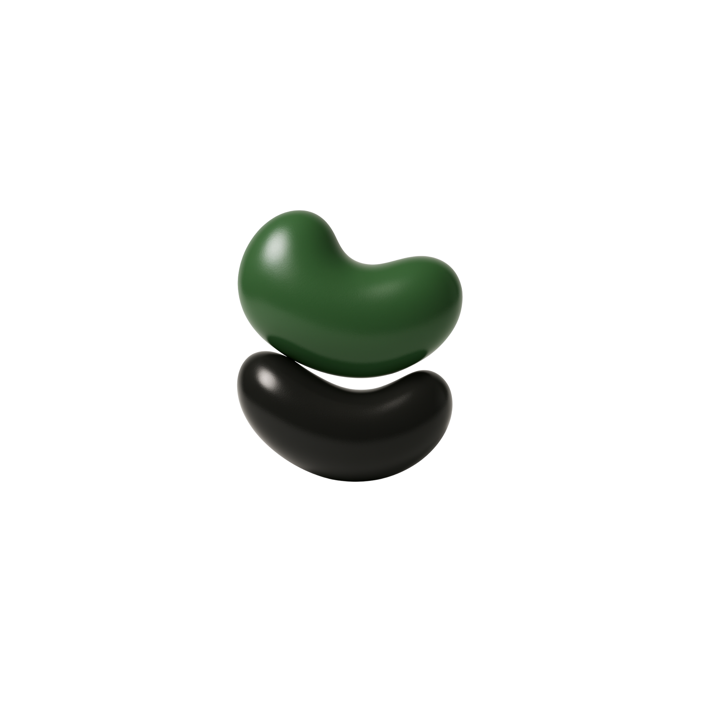

the vintage gallery
売ることよりも、残すこと。
飾ることよりも、記述すること。
Aeternumは、
古物、記憶、思想、文化の断片を
“意味ごと”受け取り、
それらを構造として記述し、
時間を越えて継承可能にするための
蒐集構想です。
Aeternumが蒐集するモノの中から、
“意味を次へと継承できる”と
判断したものを選定し、
ECおよびPOPUPを通じて届けていきます。
単なる売買ではなく、
価値の文脈ごと手渡すことを前提とした
実践領域です。
Aeternumを
「意味を継承する構造」として捉え、
事業者がコンセプトに対して
欺瞞なく経営できる状態を設計します。
思想・文脈・構造の三層から、
ブランドおよび事業の駆動原理
そのものに関与します。
2026.04 -
2026.03.21 / 18:00 - 24:00
Aeternumとして初めての
POPUP出店。
蒐集物、オリジナルグッズの
販売を行います。
@ CozyStudioBoaBASE
兵庫県神戸市中央区元町通2-8-6
村田ビル4F